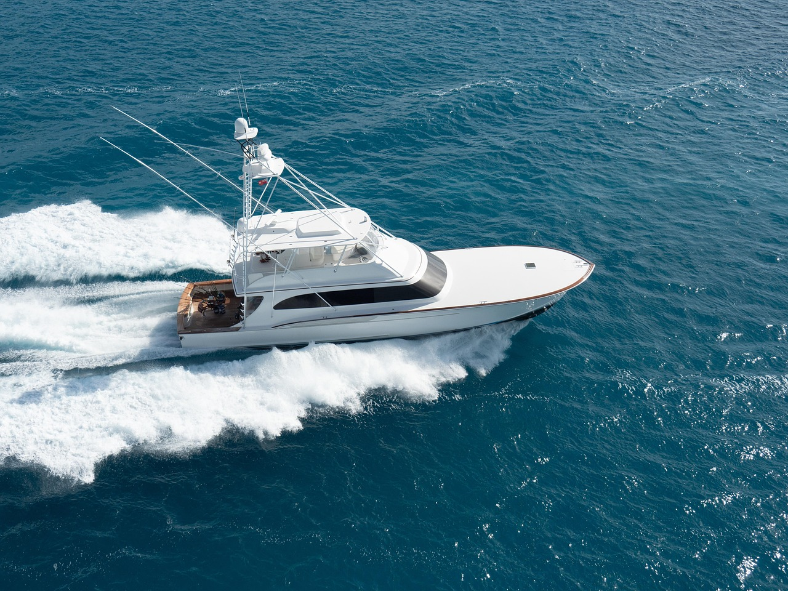
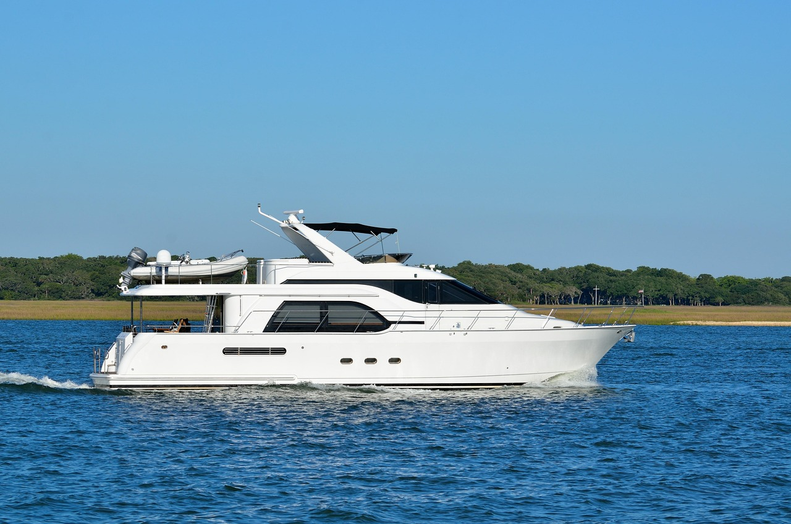
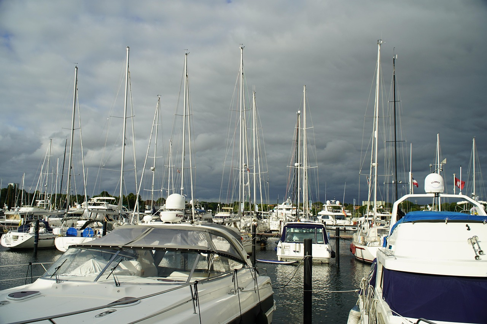
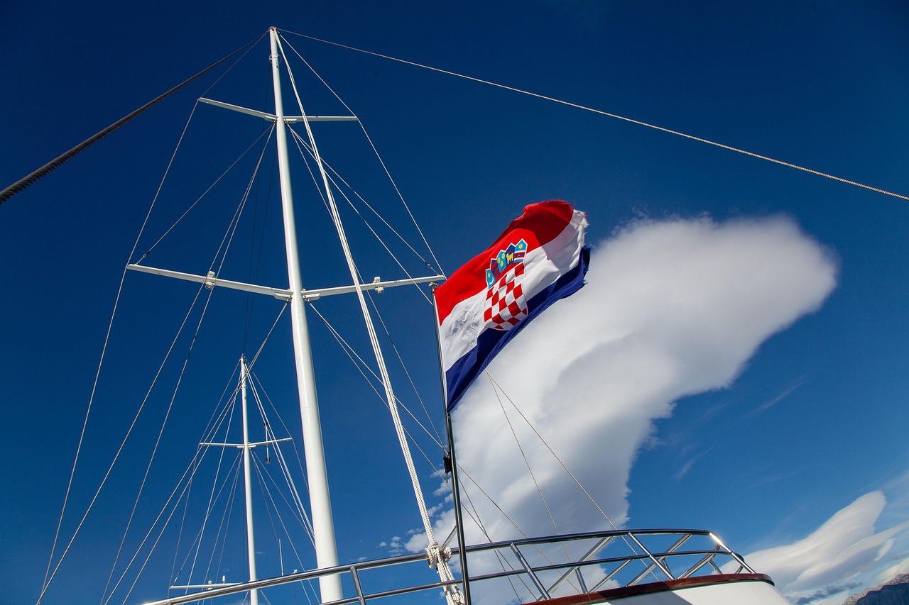

Noleggio yacht a Pola
Un charter privato su misura per il vostro gruppo, la vostra data e la vostra idea di giornata perfetta in mare.
- Durata
- Poche ore, un giorno o più giorni
- Skipper
- Professionista, o con la vostra patente
- Partenza
- Marina di Pola
- Prenotazione
- Preventivo su misura
La costa alle vostre condizioni
Uno yacht vi regala la costa meridionale dell’Istria senza orari: le Isole Brioni, calette tranquille e baie per il bagno lontane dalla folla. I charter durano mezza giornata, una giornata intera o più giorni, con uno skipper professionista oppure, se avete la patente adatta, in autonomia.
Perché si noleggia uno yacht
Tramonto in due
Una serata romantica su acque calme.
Giornata in famiglia in mare
Soste per il bagno, pranzo in coperta e nessuna fretta.
Festeggiamenti
Compleanni e feste private sull’acqua.
Matrimoni
Cerimonie e festeggiamenti con familiari e amici.
Come prenotare
Indicateci le date, il numero di ospiti e che cosa avete in mente. Vi risponderemo con le opzioni adatte e un prezzo. Ogni charter viene organizzato su misura.
- Mezza giornata, giornata intera o più giorni
- Skipper disponibile
- Matrimoni, feste, festeggiamenti
- Partenza da Pola
Foto



Organizzare un charter
Scegliete il mese per tempo
I prezzi sono più alti a luglio e ad agosto. Giugno e settembre sono più tranquilli e spesso più convenienti.
Indicateci il numero di persone
Da questo dipende quali yacht sono adatti.
Pensate al pranzo
Mangiare a bordo o a terra cambia il percorso che vi proponiamo.
Domande frequenti
Possiamo organizzare un matrimonio o una festa a bordo?
Possiamo prenotare una crociera al tramonto solo per due?
Dove mangiamo durante un charter di un’intera giornata?
Cosa vi serve da noi per un preventivo?
Giugno o settembre sono una buona scelta?
Pronti a prenotare?
Inviateci le date e il numero di persone. Verifichiamo la disponibilità e rispondiamo entro 24 ore.